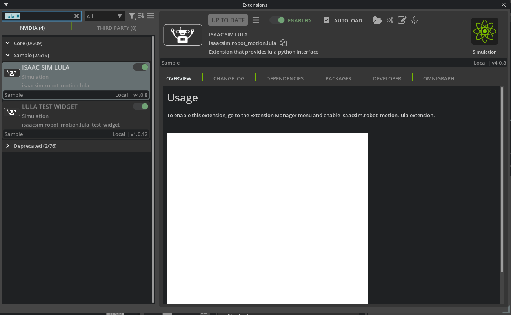

ロボット設定ファイルの生成¶
学習目標¶
このチュートリアルを修了すると、以下の内容を習得できます：
- USD to URDF Exporter を使った URDF ファイルの生成方法
- Lula Robot Description Editor の使い方
- コリジョンスフィアの生成と調整方法
- Lula ロボット記述ファイル（YAML）のエクスポート方法
- cuMotion XRDF ファイルのエクスポート方法
はじめに¶
前提条件¶
- チュートリアル 7: マニピュレータの設定 を完了していること
所要時間¶
約 30 分
概要¶
前回までのチュートリアルでは、UR10e ロボットアームと Robotiq 2F-140 グリッパーをインポートし、物理パラメータを調整しました。しかし、ロボットを自律的に動かすにはキネマティクスソルバー（RMPFlow や cuMotion など）が必要で、これらのソルバーにはロボットの構造情報やコリジョン情報を記述した設定ファイルが必要です。
このチュートリアルでは、以下の2つのツールを使って設定ファイルを生成します：
- USD to URDF Exporter：USD アセットから URDF ファイルを生成
- Lula Robot Description Editor：コリジョンスフィアの生成とロボット記述ファイル（YAML / XRDF）のエクスポート
設定ファイルの用途
生成される設定ファイルは、RMPFlow、cuMotion、Lula キネマティクスソルバーなどのモーションプランニングツールで使用されます。次のチュートリアル（ピック＆プレースの例）で実際に活用します。
使用するアセット¶
チュートリアル 7 で作成したアセットを使用します。まだ完了していない場合は、Isaac Sim に同梱されているサンプルアセットを代わりに使用できます。画面右下の Content タブから以下のパスでアクセスできます：
| アセット | パス | 用途 |
|---|---|---|
| 設定済みアセット | Samples > Rigging > Manipulator > configure_manipulator > ur10e > ur > ur_gripper.usd |
チュートリアル 7 の完成アセット |
| Lula 用アセット | Samples > Rigging > Manipulator > configure_manipulator > ur10e > ur > ur_gripper_lula.usd |
Instantiable 解除済みアセット（ステップ 2 で使用） |
ステップ 1：ロボット URDF の生成¶
まず、USD アセットから URDF ファイルを生成します。URDF は Lula Robot Description Editor の入力として必要です。
1-1. USD to URDF Exporter エクステンションの有効化¶
-
Isaac Sim のメニューから Window > Extensions を選択します。
-
検索バーに「URDF」と入力します。
-
Isaac Sim USD to URDF Exporter Extension を見つけます。
エクステンションが見つからない場合
検索結果にエクステンションが表示されない場合は、検索バー右側の「@feature」フィルターを削除してください。
-
ENABLE トグルをクリックして有効にします。
-
AUTOLOAD チェックボックスをオンにします（次回以降、Isaac Sim の起動時に自動的に読み込まれるようになります）。

1-2. URDF ファイルのエクスポート¶
-
チュートリアル 7 で作成した
ur_gripper.usdアセットを開きます（Isaac Sim 同梱アセットを使用する場合はSamples > Rigging > Manipulator > configure_manipulator > ur10e > ur > ur_gripper.usd）。 -
Isaac Sim のメニューから File > Export URDF を選択します。
-
エクスポートダイアログの下部でファイル名を
ur_gripperに設定します。 -
ダイアログ下部の Export Options セクションで、以下の項目を設定します：
設定項目 デフォルト値 説明 Mesh Folder Name meshesエクスポート先に作成されるメッシュフォルダの名前。URDF 内のメッシュ参照パスにも使用される Mesh Path Prefix file://URDF ファイル内でメッシュファイルを参照する際のパスプレフィックス。 file://（絶対パス URI）、package://（ROS パッケージパス）、./（相対パス）から選択Package Name （空） Mesh Path Prefix で package://を選択した場合のみ表示される。ROS パッケージ名を指定する（例：ur_gripper_description）Root Prim Path （空） エクスポートするロボットのルートプリムパス。空の場合はステージのデフォルトプリムが使用される Visualize Collisions オフ オンにすると、非表示に設定されているコリジョンメッシュも URDF に含めてエクスポートする Mesh Path Prefix の選択
file://（デフォルト）：メッシュファイルを絶対パスの URI で参照します。ローカルでの使用に適しています。package://：ROS パッケージのパス形式で参照します。ROS 環境でロボットを使用する場合に選択してください。選択すると Package Name フィールドが表示されるので、ROS パッケージ名を入力します。./：相対パスで参照します。URDF ファイルとメッシュフォルダを一緒に移動する場合に便利です。
-
Export をクリックしてエクスポートを実行します。

ステップ 2：Lula Robot Description Editor の準備¶
2-1. Lula エクステンションの有効化¶
-
Isaac Sim のメニューから Window > Extensions を選択します。
-
検索バーに「Lula」と入力します。
-
Isaac Sim Lula Extension を見つけます。
エクステンションが見つからない場合
検索結果にエクステンションが表示されない場合は、検索バー右側の「@feature」フィルターを削除してください。
-
ENABLE トグルをクリックして有効にします。
-
AUTOLOAD チェックボックスをオンにします。

2-2. アセットの準備（Instantiable メッシュの解除）¶
Lula Robot Description Editor は Instantiable メッシュ（インスタンス化されたメッシュ）をサポートしていません。URDF からインポートしたロボットのメッシュには Instantiable が設定されている場合があるため、事前に解除する必要があります。
-
まだ開いていない場合、
ur_gripper.usdアセットを開きます。 -
Stage パネルで、ロボットの
visuals（ビジュアルメッシュ）とcollisions（コリジョンメッシュ）プリムをすべて選択します。効率的な選択方法
Stage パネルの検索機能を使って
visualsやcollisionsで検索すると、対象のプリムを効率的に見つけることができます。 -
Property パネルで Instantiable フィールドのチェックを外します。

Instantiable が見つからないときは？
選択されているメッシュにInstantiableが有効なものと無効なものが混在している可能性があるので、注意深く選択して混在を防ぐ必要があります。
-
Ctrl + S で変更を保存します。
準備済みアセットを使用する場合
この手順が既に完了したアセットが Isaac Sim に同梱されています。Content ブラウザから Samples > Rigging > Manipulator > configure_manipulator > ur10e > ur > ur_gripper_lula.usd を開くことで、この手順をスキップできます。
ステップ 3：ジョイントの設定¶
3-1. シミュレーションの開始と Lula Robot Description Editor の起動¶
Lula Robot Description Editor はシミュレーション実行中に使用する必要があります。
-
ツールバーの Play ボタンをクリックしてシミュレーションを開始します。
-
Isaac Sim のメニューから Tools > Robotics > Lula Robot Description Editor を選択します。
-
Lula Robot Description Editor ウィンドウが表示されます。
3-2. アーティキュレーションの選択¶
-
Lula Robot Description Editor の Selection Panel で、ur10e アーティキュレーションを選択します。
-
ロボットの全ジョイントが一覧で表示されます。

3-3. ジョイントステータスの設定¶
Set Joint Properties セクションで、各ジョイントの Joint Status を設定します。ここでの設定は、キネマティクスソルバーがどのジョイントを制御対象とするかを決定します。
UR10e のジョイント（ロボットアームの6軸）：
| ジョイント名 | Joint Status | 説明 |
|---|---|---|
| shoulder_pan_joint | Active Joint | ソルバーが制御するジョイント |
| shoulder_lift_joint | Active Joint | ソルバーが制御するジョイント |
| elbow_joint | Active Joint | ソルバーが制御するジョイント |
| wrist_1_joint | Active Joint | ソルバーが制御するジョイント |
| wrist_2_joint | Active Joint | ソルバーが制御するジョイント |
| wrist_3_joint | Active Joint | ソルバーが制御するジョイント |
Robotiq 2F-140 グリッパーのジョイント（すべて）：
| ジョイント名 | Joint Status | 説明 |
|---|---|---|
| （グリッパーの全ジョイント） | Fixed Joint | ソルバーの制御対象外 |

なぜグリッパーのジョイントを Fixed にするのか
グリッパーとアームは通常、別々に制御されます。キネマティクスソルバーの制御空間（cspace）にはアームのジョイントのみを含めれば十分で、グリッパーのジョイントを含めると不要な計算が発生し、コリジョンチェック時にグリッパーが動いてしまう可能性があります。
ジョイントの初期値について
cspace_to_urdf_rules のジョイントのデフォルト値は、マニピュレータの USD での初期ポーズと一致している必要があります。一致していない場合は、タスク初期化時にジョイントのリセットを行ってください。
シミュレーションを停止しないでください
次のステップ（コリジョンスフィアの生成）でもシミュレーションの実行が必要です。Lula Robot Description Editor を閉じたり、シミュレーションを停止したりしないでください。
ステップ 4：コリジョンスフィアの生成¶
コリジョンスフィアは、ロボットの各リンクの形状を球体で近似したもので、キネマティクスソルバーが障害物との衝突を高速に判定するために使用します。ロボットの各リンクに対して、複数の球体を配置してリンクの形状をカバーします。
4-1. コリジョンスフィアの生成手順¶
以下の手順をロボットの各リンクに対して繰り返します。ここでは upper_arm_link を例に説明します。
-
Lula Robot Description Editor の Link Sphere editor セクションを開きます。
-
Selection Panel / Select link ドロップダウンから、コリジョンスフィアを生成するリンク（例：
upper_arm_link）を選択します。 -
Generate Spheres / Select Mesh ドロップダウンから、対応するメッシュ（例：
/collisions/upperarm/mesh）を選択します。 -
以下のパラメータを設定します：
パラメータ 推奨値 説明 Radius Offset 0.03 球体の半径のオフセット（メッシュ表面からのマージン） Number of Spheres 8 生成する球体の数 
-
Generate Spheres ボタンをクリックします。
-
リンク上に赤い球体が表示されます。生成が完了すると球体がシアン（水色）に変わります。
-
必要に応じて、球体の位置をドラッグして調整できます。
-
この手順をロボットのすべてのリンク（アームのリンクおよびグリッパーのリンク）に対して繰り返します。選択されていないリンクで生成完了しているメッシュは黄色で表示されます。手先の細かい部分のRadius Offsetは0.01などの小さい値にするのをオススメします。

4-2. コリジョンスフィアの調整のコツ¶
コリジョンスフィアの品質はモーションプランニングの性能に大きく影響します。以下のガイドラインを参考にしてください：
| ポイント | 説明 |
|---|---|
| サイズのバランス | 球体はリンクの形状を十分にカバーする大きさにしつつ、大きすぎないようにします。大きすぎるとソルバーが障害物のない場所でも衝突と判定し、適切な経路を見つけられなくなります |
| 数と精度のトレードオフ | 球体の数を増やすとリンク形状の近似精度が向上しますが、ソルバーの計算コストが増加します。精度とパフォーマンスのバランスを考慮してください |
| メッシュの選択 | 通常はコリジョンメッシュ上に球体を生成します。ビジュアルメッシュの方がリンク形状をより正確に近似できる場合は、そちらを使用してください |
| 長いリンクへの対応 | 長いリンクの場合は、両端に球体を生成してから Add Spheres で中間に均等に配置すると効果的です |
| サイズの調整 | 自動生成された球体のサイズが適切でない場合は、Scale Spheres in Link 機能を使って拡大・縮小できます |
| 非閉曲面メッシュ | 自動球体生成はウォータータイト（閉じた）三角メッシュでのみ動作します。非閉曲面メッシュの場合は、手動で球体を追加して調整してください |
シミュレーションを停止しないでください
引き続き次のステップでもシミュレーションが必要です。シミュレーションを停止したり、ファイルを保存したりしないでください。
ステップ 5：設定ファイルのエクスポート¶
5-1. Lula ロボット記述ファイル（YAML）のエクスポート¶
-
Lula Robot Description Editor の下部にある Export To File セクションを展開します。
-
Export to Lula Robot Description File を展開します。
-
ファイルアイコンをクリックし、ファイル名を
ur10e.yamlに設定します。 -
Save をクリックしてエクスポートを実行します。

エクスポートされるファイルの内容
Lula ロボット記述ファイル（YAML）には、ジョイントの構成、制御空間の定義、コリジョンスフィアの位置とサイズなどが記述されます。このファイルは RMPFlow や Lula キネマティクスソルバーで使用されます。
5-2. cuMotion XRDF ファイルのエクスポート（オプション）¶
cuMotion を使用する場合は、XRDF ファイルもエクスポートします。
-
Export To File セクションで Export to cuMotion XRDF を展開します。
-
ファイルアイコンをクリックし、ファイル名を
ur10e.xrdfに設定します。 -
Save をクリックしてエクスポートを実行します。

XRDF とは
XRDF（Extended Robot Description Format）は、cuMotion（CUDA アクセラレーションされたモーションプランニング）で使用されるロボット記述フォーマットです。GPU を活用した高速なモーションプランニングを行う際に必要になります。
5-3. シミュレーションの停止¶
すべてのエクスポートが完了したら、ツールバーの Stop ボタンをクリックしてシミュレーションを停止します。
まとめ¶
このチュートリアルでは以下のトピックを扱いました：
- USD to URDF Exporter による URDF ファイルの生成
- Lula Robot Description Editor のセットアップとアセットの準備（Instantiable の解除）
- ジョイントステータスの設定：アームのジョイントを Active、グリッパーのジョイントを Fixed に設定
- コリジョンスフィアの生成：各リンクに対する球体の配置と調整
- Lula ロボット記述ファイル（YAML） のエクスポート
- cuMotion XRDF ファイルのエクスポート（オプション）
次のステップ¶
次のチュートリアル「ピック＆プレースの例」に進み、生成した設定ファイルを使って、キネマティクスソルバーと RMPFlow によるマニピュレーションタスクを実行する方法を学びましょう。